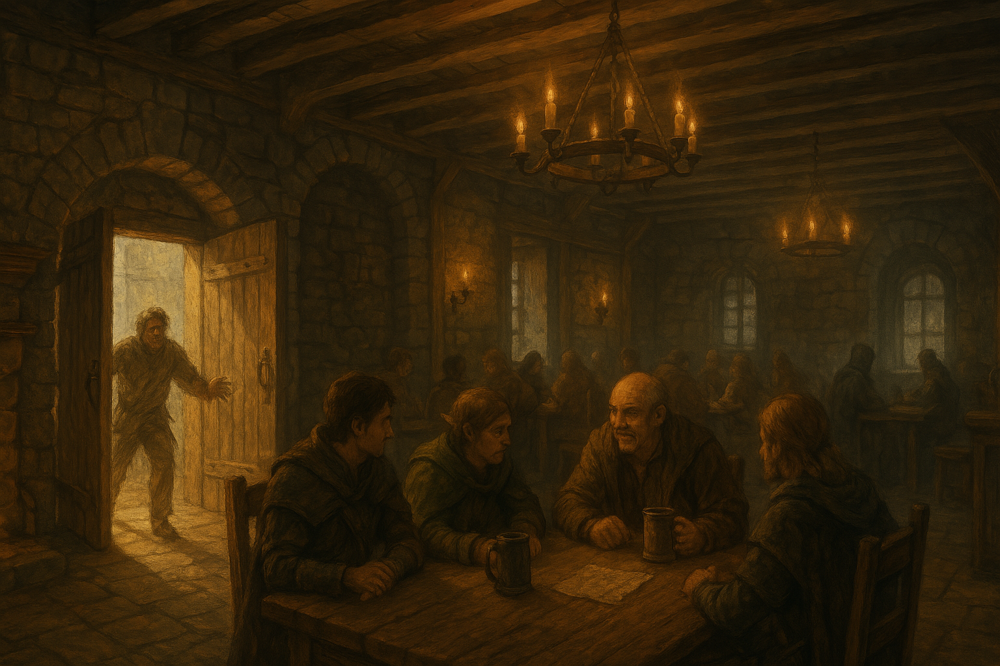

Chapter 1: The Curse of Vowalon
Curse of Vowalon


Curse of Vowalon
15048.7.18
所有的冒險都有相同的開始，而這個冒險，也並非例外。
一群單獨的個體：一個人類、兩個妖精、一個半身人、兩個龍人、一個魔人，甚至有一隻牛頭怪，穿著不同的服裝，沒有特定目的地來到了沃瓦倫，一座再普通不過的小村莊。
他們不知道彼此，也不知道，他們將形成一個冒險團。一個被獵捕、而後被讚頌的冒險團。然後如大多數的冒險團一樣，各自走向分別的道路。
但現在，讓我們聚焦於「現在」。或者我應該說，「過去」？
冒險者們不約而同地來到了當地最熱鬧的酒館，勞迪俱樂部。我是說，除了這地方外，他們會想去哪裡？勞迪俱樂部的老闆，布魯斯，如一般酒館的老闆：壯碩但溫和，對冒險者們稱不上熱情，但有求必應。
然後，有事發生了。鎮上的酒鬼艾菲醉醺醺地撞開門，大聲哭喊：「我們都被詛咒了！」
啊，破題，「沃瓦倫的詛咒」，來吧！
冒險者們一邊安撫艾菲，一邊向布魯斯探聽詛咒的事，得知數個月前鎮長的兒子山米克莫名的死亡是一切的開端。
冒險者們和布魯斯要了一張小鎮的地圖，布魯斯也建議明日拜訪鎮長戴洛・沃倫並慰問他。
這古怪的小事，似乎凝聚了這群外地人。這時，他們還沒以一個「冒險團隊」稱呼自己，但他們似乎也注意到了一件事：只有他們有能力和勇氣來解開這個謎題。鎮上的人們根本不知道該怎麼辦。
離開俱樂部後，冒險者們步行到當地的旅店，夜夢者準備下榻。老闆艾莉森很年輕，也挺友善的。大概是因為他們是這段時間唯一的客人吧。我是說，這個城鎮「被詛咒了」，誰會想來這小鎮啊？
準備上樓前，一名冒險者撞見鎮上傳言的斗篷人（在山米克離奇死亡後，就有越來越多沃瓦倫居民說他們看到這名「神秘斗篷人」），眾人和艾莉森一同前往探查，卻沒有找到他的蹤跡。
當晚，大家都做了噩夢。那是與他們過去有關的夢，又有點像預知夢。
這，就是一切的開始。一場冒險的開始。
15048.7.18
Every adventure starts with the same begining, and this one, is no exception.
A group of individuals: a human, two elves, a halfling, two dragonborns, a tielfing, and even a minotaur, dressed in different colors, arrived the ordinary town of Vowalon, with no specific intention.
They didn't know each other, and they have no idea that they will form an adventuring group, that will be hunted down, glorified, and like how most groups end, head into different directions.
But now, let's focus on the present, or should I say, the past?
The adventurers unanimously visited the most popular tavern in the town, Rowdys's Club. I mean, other than this place, where would they want to go?The owner of Rowdy's Club, Bruce, like most owners of taverns: masculine but warm, Not THAT enthusiatic to the adventurers, but still, answer their needs.
Then, something happened. Alfie, the town drunk slammed the door open, yelling "We're all CURSED!!!"
Ah, just like the title of the chapter. "The Curse of Vowalon". Here we go.
The adventurers tried to calm down Alfie, while asking Bruce about the "curse". It seemed like the curse started a few months ago when Sammick, the son of the mayor, died out of no reason.
The adventurers asked for a map of the town from Bruce, while Bruce suggested them to go visit the mayor, Daryl Warren, tomorrow and send their condolences.
This weird little event, seemed to gather this group of foreigners. They haven't started to call themselves as a "adventuring group" yet, but they all seemed to notice something: they are the only ones capable, and brave enough to solve this problem. The people in the town had no idea what to do.
After leaving the club, the adventurers walked to the local hostel, the Night Dreamers, for the night. The owner, Allison, was young, and pretty nice to them. Perhaps it was because they were the only customers for some time. I mean, this town is "cursed". Who would want to visit this hell of a town?
Before going upstairs, one of the adventurer ran into the mysterious "Hooded Figure". (After the death of Sammick, more folks in Vowalon claimed that they have seen this "mysterious hooded figure"). The adventurers went to investigate with Allison, but found nothing.
That night, everyone had a nightmare. Those were dreams centered around their past, and also a bit like prophetic dreams.
This, is the start of everything. The start of an adventure.